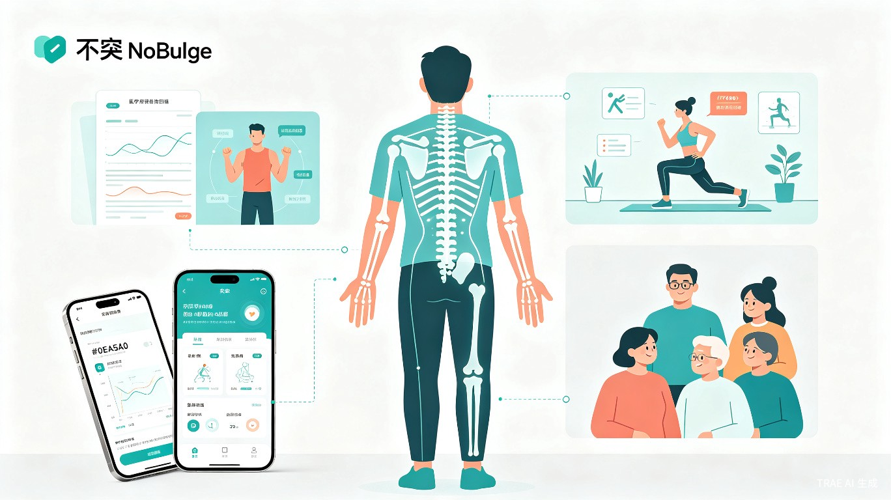
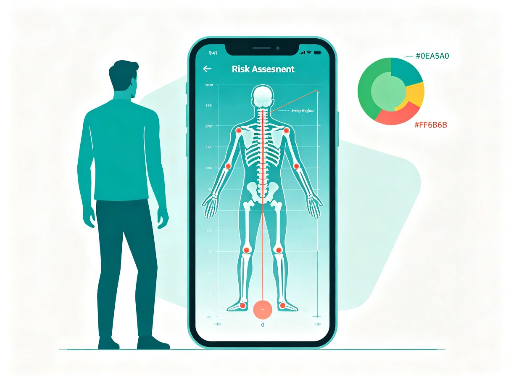
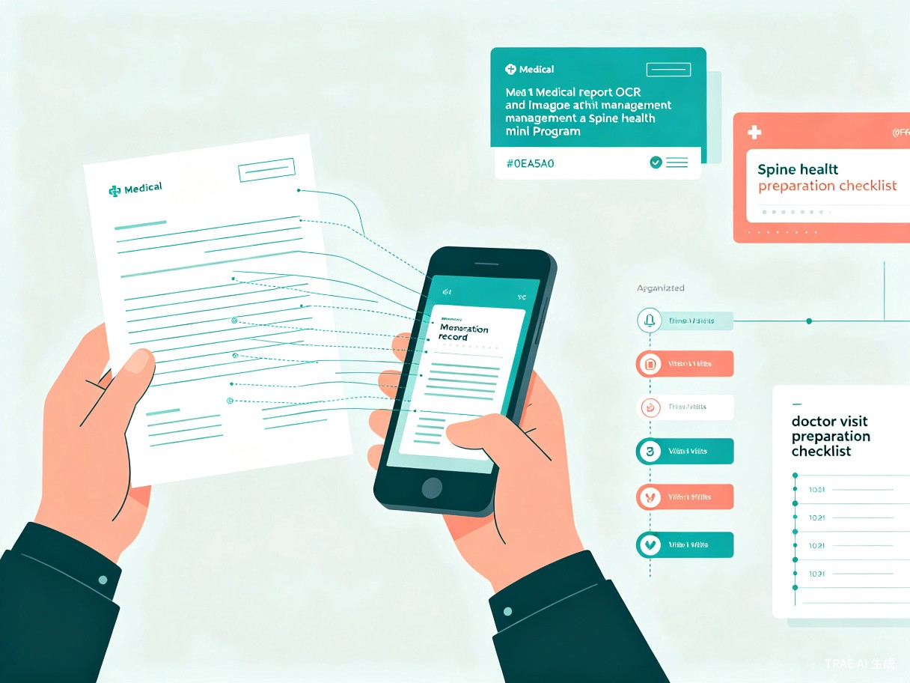
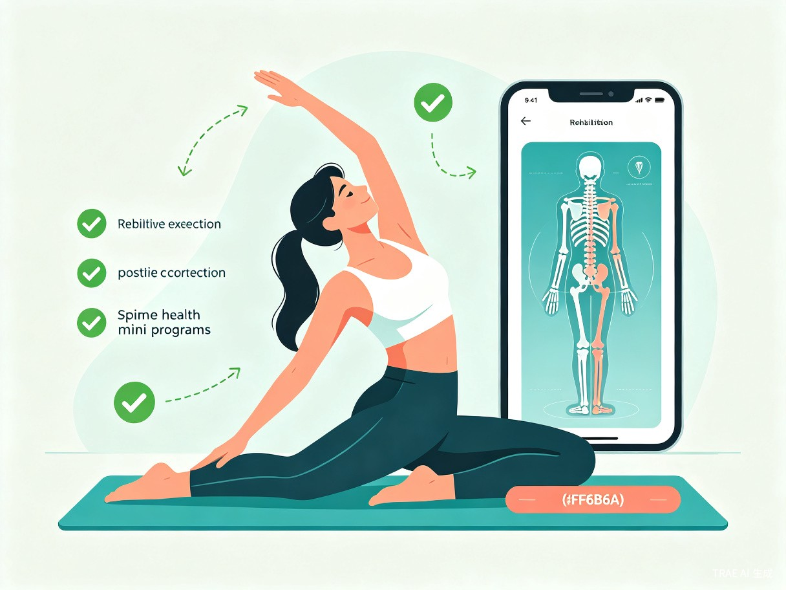
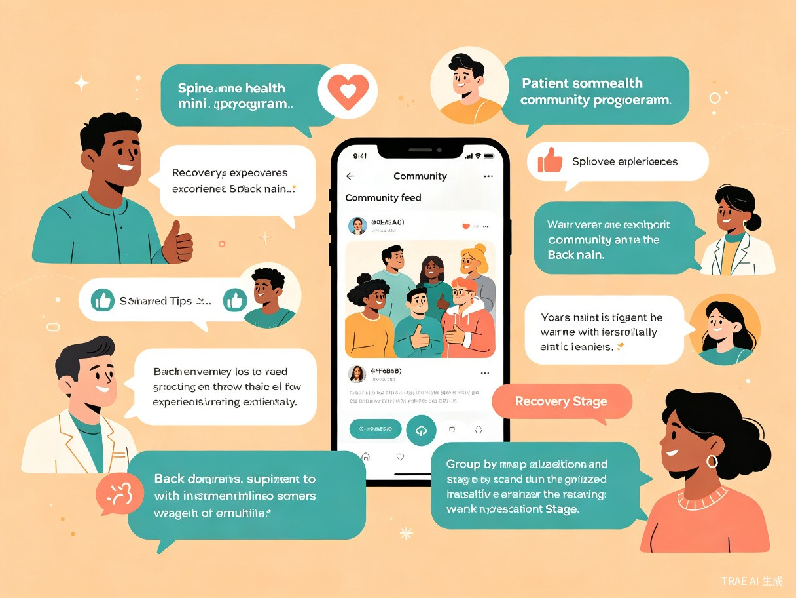

不突 NoBulge
AI脊柱健康筛查与自我管理小程序 —— 从风险筛查到康复追踪，用AI让每一步脊柱健康管理更安心
创意名称与介绍
产品名称：不突 NoBulge
一款面向脊柱健康的微信小程序，通过AI体态筛查识别高风险人群，结合报告OCR智能录入、症状自评与分级科普、康复动作实时指导以及患者社区互助，为用户提供从风险筛查到康复追踪的全流程脊柱健康管理服务。
想解决什么问题
脊柱疾病（腰椎间盘突出、脊柱侧弯等）高发且隐蔽——许多患者在出现明显症状前已有多年不良体态积累，却缺乏便捷的早期筛查工具。确诊后，患者面临报告看不懂、康复信息混乱、复查成本高、独自扛着慢性疼痛等困境。现有产品要么只做健身体态，要么只做医疗康复，没有一个产品把"筛查预警-资料管理-康复指导-社区支持"串联起来。
为什么会想到做这个
灵感来源于身边腰突患者的真实经历。他们普遍反映：如果能早点发现自己的体态有问题，也许就不会发展到需要手术的地步；拿到报告后看不懂术语，网上信息又真假难辨；一个人做康复训练很孤独，不知道别人是怎么恢复的。我们意识到，AI可以在"发现问题"和"解决问题"之间架起桥梁——用手机摄像头做初步体态筛查，用OCR帮助管理报告，用社区连接同路人。
产品形态
微信小程序——零下载门槛，适配手机摄像头和日常使用场景，基于微信生态便于社交传播和社区裂变。
目标用户及痛点
面向哪些用户
核心用户群体为20-55岁的脊柱疾病高风险人群及已确诊患者，包括长期伏案办公的白领（驼背、骨盆前倾高发）、产后女性、体力劳动者、中老年退行性脊柱疾病患者，以及关注脊柱健康的健身人群。
使用场景
日常筛查
定期用AI检测体态，发现驼背、骨盆倾斜等风险因素，及早干预
就诊管理
拍完片拿到报告，拍照上传后自动提取信息，建立个人病史档案
居家康复
跟随AI指导做康复动作，实时纠正姿势，追踪康复进度
当前痛点
缺乏早期筛查
脊柱问题早期无明显症状，等到疼痛就医时往往已较严重，缺乏便捷的日常筛查工具
报告看不懂
放射科报告充满专业术语，普通患者难以理解病情严重程度
康复信息混乱
网上方案良莠不齐，不知道哪些动作适合自己、哪些会加重病情
孤独无支持
脊柱疾病是慢性问题，患者长期承受疼痛和心理压力，缺乏同伴交流
核心功能
不突 NoBulge 围绕"筛查预警、资料管理、康复指导、社区支持"四个价值维度，提供五大功能模块，构建脊柱健康管理的完整闭环。

🧠 功能一：AI体态筛查与风险识别
基于 MediaPipe 姿态检测模型，用户打开手机后置摄像头即可完成体态筛查。AI自动分析脊柱曲度、骨盆倾斜度、肩部水平度、头部前倾角等核心指标，识别驼背、骨盆倾斜、高低肩、肌肉不平衡等腰突风险因素，生成风险等级评估。不是诊断疾病，而是帮助高风险人群及早发现体态异常，减少不必要的医院就诊——筛查结果异常时建议就医，正常时提供日常改善建议。

📄 功能二：报告OCR智能录入与影像归档
使用 PaddleOCR 3.0 对纸质放射科报告进行高精度文字识别，自动提取关键医学术语（病变节段、突出类型、严重程度等），整理成结构化个人病史档案。同时支持CT/MRI胶片拍照归档，建立完整的影像资料时间线。配套"问医生准备清单"功能，帮助患者在就诊前整理好所有资料，大幅提升医患沟通效率。

🏃 功能三：康复动作实时指导与进度追踪
基于症状自评结果（ODI功能障碍指数、VAS疼痛评分），推送对应的分级康复动作。用户做动作时，AI实时检测姿势正确性，对比标准动作的关键点角度，发现偏差时给出温和纠正提示。每次训练记录自动存入个人档案，生成康复进度曲线，让用户直观看到恢复趋势。所有动作均标注适用阶段和禁忌症，仅供健康教育参考。

💬 功能四：患者社区互助
这是现有脊柱健康产品中最缺失的部分。社区让用户可以分享真实的康复经验、交流治疗心得、获得同病患者的情感支持。支持按病情阶段（筛查异常/急性期/缓解期/恢复期/术后）分组讨论，方便用户找到与自己处境相似的伙伴。社区内容经过基础审核，确保不传播误导性医疗信息。康复之路不再是一个人的战斗。
竞品差异化分析
市面上的产品各有优势但存在结构性缺口——通用健身平台不做病理级筛查，专业康复APP不做早期预防和社区支持，医疗AI工具不做持续管理。不突 NoBulge 是唯一覆盖"筛查-管理-康复-社区"全链条的轻量工具。
| 能力维度 | Keep等通用健身 | 银杉/WELL等康复 | 讯飞晓医等AI | 不突 NoBulge |
|---|---|---|---|---|
| AI体态早期筛查 | 无 | 无 | 无 | 驼背/骨盆倾斜/高低肩 |
| 姿势异常识别 | 无 | 训练时检测 | 无 | 日常+训练场景 |
| 报告OCR与档案管理 | 无 | 无 | 通用解读 | 脊柱专项优化 |
| 康复动作实时纠正 | 无 | 部分支持 | 无 | 关键点角度对比 |
| 康复进度追踪 | 无 | 基础记录 | 无 | 进度曲线可视化 |
| 患者社区 | 无 | 部分有 | 无 | 按阶段分组 |
| 微信小程序形态 | 独立APP | 独立APP | 部分支持 | 零下载门槛 |
| 零硬件依赖 | 无需硬件 | 部分需硬件 | 无需硬件 | 仅用手机 |
核心差异化定位
不突 NoBulge 不与银杉、WELL在"康复方案专业性"上正面竞争，而是聚焦它们都忽略的环节——从"发现问题"到"解决问题"的全链条轻量工具。AI体态筛查是入口（识别高风险人群），报告管理是基础（整理病史资料），康复指导是核心（动作纠正+进度追踪），社区支持是纽带（同伴互助+情感支持）。四者协同，形成其他产品无法复制的闭环体验。
价值与意义
📈 效率提升：筛查前置，减少不必要就诊
通过AI体态筛查，帮助高风险人群在症状加重前发现体态异常，及时调整生活习惯或就医检查。对于已确诊患者，通过报告管理和就诊助手功能，让每次复查都准备充分，减少反复排队和无效就诊。
🌎 社会价值：让脊柱健康管理普惠可及
中国优质康复资源集中在一二线城市，基层患者缺乏专业指导。不突 NoBulge 将AI筛查和健康科普能力普惠化，让每一位用户都能获得基本的脊柱健康素养。患者社区更是填补了现有医疗体系中最缺失的情感支持环节。
"从体态筛查到康复追踪，让每一位用户的脊柱健康不再被忽视，康复路上不再孤单。"
技术方案概览
端侧（微信小程序）
MediaPipe Pose 体态筛查与康复动作检测，NCNN推理加速，Int8量化，数据不上传保护隐私
云端（微信云开发）
云数据库（用户数据/社区内容）、云存储（影像档案/动作视频）、云函数（OCR业务逻辑）
AI能力
MediaPipe（体态筛查+动作纠正）、PaddleOCR 3.0（报告识别）、NLP术语提取
内容体系
循证医学分级科普、经审核的康复动作库、社区内容审核机制、康复进度可视化